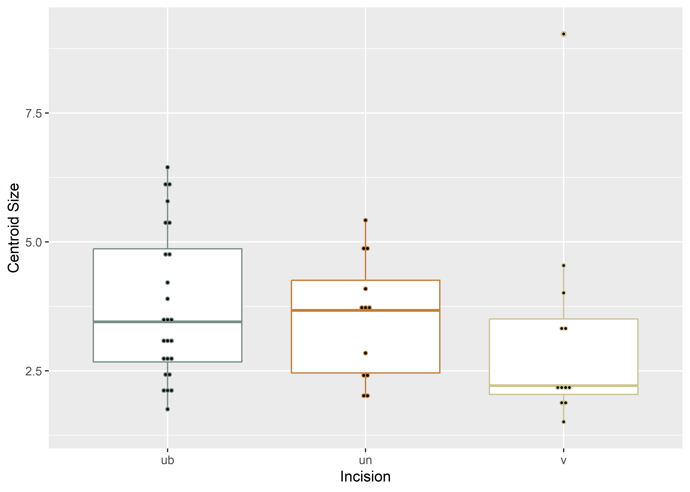
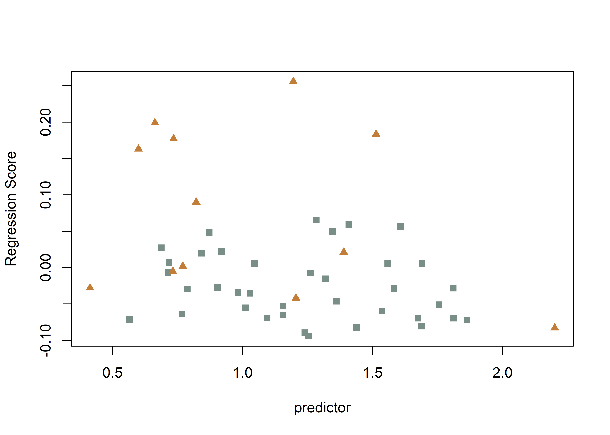
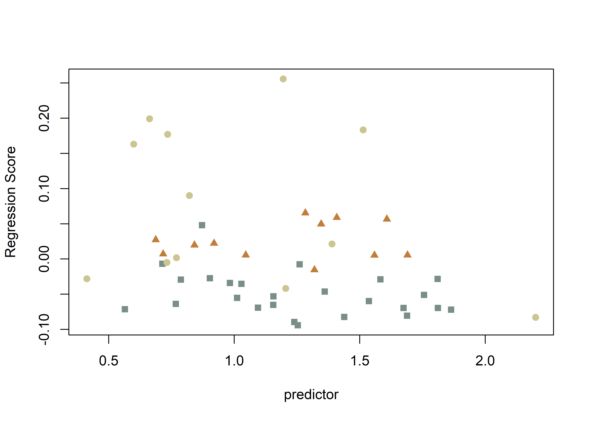
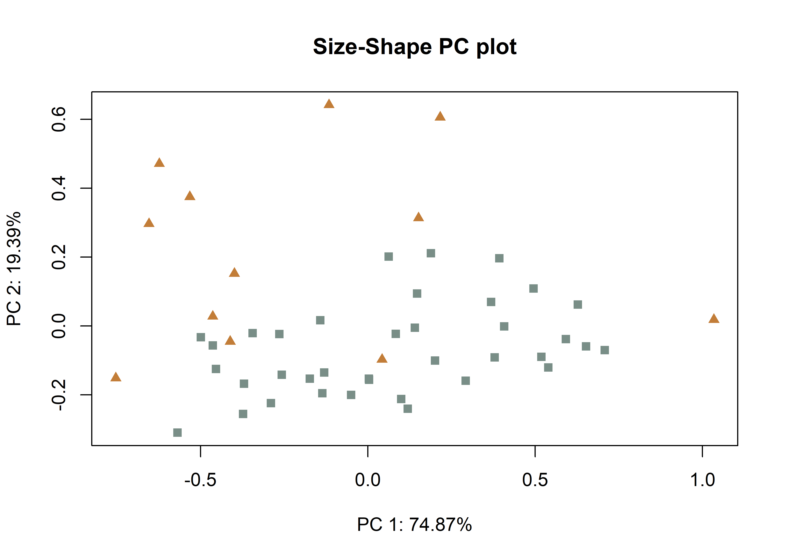

This volume is in Open Review. I want your feedback to make the volume better for you and other readers. To add your annotation, select some text and then click the on the pop-up menu. To see the annotations of others, click the in the upper right hand corner of the page
Chapter 6 Archaeological sample - analysis
6.1 Load packages + data
library(here)
library(geomorph)
library(tidyverse)
library(wesanderson)
# read shape data
source('readmulti.csv.R')
setwd("./data1")
filelist <- list.files(pattern = ".csv")
coords <- readmulti.csv(filelist)
setwd("../")
# read qualitative data
qdata <- read.csv("qdata1.csv",
header = TRUE,
row.names = 1)
qdata <- qdata[match(dimnames(coords)[[3]],rownames(qdata)),]
# print qdata
knitr::kable(qdata,
align = "ccccc",
caption = "Attributes included in qdata.")| site | unit | county | incision | inc2 | |
|---|---|---|---|---|---|
| 41sa66-4 | sa66 | angelinaNF | san-augustine | v | v |
| 41sa66-5 | sa66 | angelinaNF | san-augustine | u | ub |
| 41sa66-6 | sa66 | angelinaNF | san-augustine | u | un |
| 41sa66 | sa66 | angelinaNF | san-augustine | u | ub |
| 41sb125-11-lot50 | sb125 | sabineNF | sabine | u | ub |
| 41sb125-2-lot100 | sb125 | sabineNF | sabine | u | un |
| 41sb125-3-lot99 | sb125 | sabineNF | sabine | u | un |
| 41sb189-10-lot17 | sb189 | sabineNF | sabine | u | ub |
| 41sb189-9-lot17 | sb189 | sabineNF | sabine | u | ub |
| 41sb291-4-lot245 | sb291 | sabineNF | sabine | u | un |
| 41sb291-9-lot229 | sb291 | sabineNF | sabine | u | ub |
| 41sy258-st2-1020 | sy258 | sabineNF | shelby | v | v |
| 41sy258-st3-2030 | sy258 | sabineNF | shelby | u | ub |
| 41sy280-101 | sy280 | sabineNF | shelby | v | v |
| 41sy280-11 | sy280 | sabineNF | shelby | u | ub |
| 41sy280-127 | sy280 | sabineNF | shelby | u | ub |
| 41sy280-18 | sy280 | sabineNF | shelby | u | ub |
| 41sy280-20 | sy280 | sabineNF | shelby | u | ub |
| 41sy280-82 | sy280 | sabineNF | shelby | u | ub |
| 41sy280-84 | sy280 | sabineNF | shelby | u | un |
| 41sy280-lot107 | sy280 | sabineNF | shelby | u | ub |
| 41sy280-lot112 | sy280 | sabineNF | shelby | u | ub |
| 41sy280-lot125 | sy280 | sabineNF | shelby | u | ub |
| 41sy280-lot31 | sy280 | sabineNF | shelby | u | un |
| 41sy280-lot48 | sy280 | sabineNF | shelby | u | ub |
| 41sy280-lot50 | sy280 | sabineNF | shelby | v | v |
| 41sy280-lot52 | sy280 | sabineNF | shelby | u | un |
| 41sy280-lot90 | sy280 | sabineNF | shelby | u | ub |
| 41sy280-lot91 | sy280 | sabineNF | shelby | u | ub |
| 41sy280-lot94 | sy280 | sabineNF | shelby | v | v |
| 41sy43-1 | sy43 | sabineNF | shelby | v | v |
| 41sy43-13-1191 | sy43 | sabineNF | shelby | u | ub |
| 41sy43-19 | sy43 | sabineNF | shelby | u | un |
| 41sy43-fsn1-830 | sy43 | sabineNF | shelby | u | ub |
| 41sy43-k2-2737 | sy43 | sabineNF | shelby | u | un |
| 41sy43-k6-1020 | sy43 | sabineNF | shelby | u | ub |
| 41sy43-k8-17 | sy43 | sabineNF | shelby | v | v |
| 41sy43-lot1035 | sy43 | sabineNF | shelby | v | v |
| 41tn91-u1-010 | tn91 | davycNF | trinity | u | un |
| 41tn91-u1-2030 | tn91 | davycNF | trinity | u | ub |
| 41tn91-u2-1020 | tn91 | davycNF | trinity | u | un |
| 41tn91-u2-lot17 | tn91 | davycNF | trinity | v | v |
| 41tn91-u3-2030 | tn91 | davycNF | trinity | u | ub |
| 41tn91-u4-020 | tn91 | davycNF | trinity | u | ub |
| 41tn91-u4-4050 | tn91 | davycNF | trinity | u | un |
| 41tn91-u4-5060 | tn91 | davycNF | trinity | v | v |
| 41tn91-u6-3040 | tn91 | davycNF | trinity | u | ub |
| 41tn91-u7-3040 | tn91 | davycNF | trinity | v | v |
| 41tn91-u8-1020 | tn91 | davycNF | trinity | v | v |
6.2 Generalised Procrustes Analysis
# gpa
Y.gpa <- gpagen(coords,
PrinAxes = TRUE,
ProcD = TRUE,
Proj = TRUE,
print.progress = FALSE)
# gpa plot
knitr::include_graphics('images/gpa3d.png')
Figure 6.1: Results of generalized Procrustes analysis.
# geomorph data frame
gdf <- geomorph.data.frame(shape = Y.gpa$coords,
size = Y.gpa$Csize,
site = qdata$site,
unit = qdata$unit,
county = qdata$county,
inc = qdata$incision,
inc2 = qdata$inc2) # add centroid size to qdata
qdata$csz <- Y.gpa$Csize
# attributes for boxplots
csz <- Y.gpa$Csize
inc <- qdata$incision
inc2 <- qdata$inc2
# print qdata + centroid size
knitr::kable(qdata,
align = "cccccc",
caption = "Attributes included in qdata.")| site | unit | county | incision | inc2 | csz | |
|---|---|---|---|---|---|---|
| 41sa66-4 | sa66 | angelinaNF | san-augustine | v | v | 1.820931 |
| 41sa66-5 | sa66 | angelinaNF | san-augustine | u | ub | 4.866901 |
| 41sa66-6 | sa66 | angelinaNF | san-augustine | u | un | 1.987811 |
| 41sa66 | sa66 | angelinaNF | san-augustine | u | ub | 2.041070 |
| 41sb125-11-lot50 | sb125 | sabineNF | sabine | u | ub | 2.987634 |
| 41sb125-2-lot100 | sb125 | sabineNF | sabine | u | un | 2.319612 |
| 41sb125-3-lot99 | sb125 | sabineNF | sabine | u | un | 3.842417 |
| 41sb189-10-lot17 | sb189 | sabineNF | sabine | u | ub | 3.527551 |
| 41sb189-9-lot17 | sb189 | sabineNF | sabine | u | ub | 1.758233 |
| 41sb291-4-lot245 | sb291 | sabineNF | sabine | u | un | 5.420475 |
| 41sb291-9-lot229 | sb291 | sabineNF | sabine | u | ub | 6.447996 |
| 41sy258-st2-1020 | sy258 | sabineNF | shelby | v | v | 9.033295 |
| 41sy258-st3-2030 | sy258 | sabineNF | shelby | u | ub | 2.797702 |
| 41sy280-101 | sy280 | sabineNF | shelby | v | v | 2.159364 |
| 41sy280-11 | sy280 | sabineNF | shelby | u | ub | 5.411401 |
| 41sy280-127 | sy280 | sabineNF | shelby | u | ub | 3.452840 |
| 41sy280-18 | sy280 | sabineNF | shelby | u | ub | 2.749337 |
| 41sy280-20 | sy280 | sabineNF | shelby | u | ub | 4.213378 |
| 41sy280-82 | sy280 | sabineNF | shelby | u | ub | 2.153787 |
| 41sy280-84 | sy280 | sabineNF | shelby | u | un | 3.740737 |
| 41sy280-lot107 | sy280 | sabineNF | shelby | u | ub | 4.649262 |
| 41sy280-lot112 | sy280 | sabineNF | shelby | u | ub | 5.789287 |
| 41sy280-lot125 | sy280 | sabineNF | shelby | u | ub | 3.501398 |
| 41sy280-lot31 | sy280 | sabineNF | shelby | u | un | 2.845462 |
| 41sy280-lot48 | sy280 | sabineNF | shelby | u | ub | 2.390230 |
| 41sy280-lot50 | sy280 | sabineNF | shelby | v | v | 1.939477 |
| 41sy280-lot52 | sy280 | sabineNF | shelby | u | un | 3.607960 |
| 41sy280-lot90 | sy280 | sabineNF | shelby | u | ub | 3.176131 |
| 41sy280-lot91 | sy280 | sabineNF | shelby | u | ub | 6.113960 |
| 41sy280-lot94 | sy280 | sabineNF | shelby | v | v | 2.083765 |
| 41sy43-1 | sy43 | sabineNF | shelby | v | v | 4.011336 |
| 41sy43-13-1191 | sy43 | sabineNF | shelby | u | ub | 3.897348 |
| 41sy43-19 | sy43 | sabineNF | shelby | u | un | 2.047506 |
| 41sy43-fsn1-830 | sy43 | sabineNF | shelby | u | ub | 2.466949 |
| 41sy43-k2-2737 | sy43 | sabineNF | shelby | u | un | 4.751420 |
| 41sy43-k6-1020 | sy43 | sabineNF | shelby | u | ub | 2.671919 |
| 41sy43-k8-17 | sy43 | sabineNF | shelby | v | v | 2.077972 |
| 41sy43-lot1035 | sy43 | sabineNF | shelby | v | v | 3.302882 |
| 41tn91-u1-010 | tn91 | davycNF | trinity | u | un | 4.992953 |
| 41tn91-u1-2030 | tn91 | davycNF | trinity | u | ub | 6.119314 |
| 41tn91-u2-1020 | tn91 | davycNF | trinity | u | un | 2.507302 |
| 41tn91-u2-lot17 | tn91 | davycNF | trinity | v | v | 4.541640 |
| 41tn91-u3-2030 | tn91 | davycNF | trinity | u | ub | 5.336270 |
| 41tn91-u4-020 | tn91 | davycNF | trinity | u | ub | 2.197247 |
| 41tn91-u4-4050 | tn91 | davycNF | trinity | u | un | 4.089450 |
| 41tn91-u4-5060 | tn91 | davycNF | trinity | v | v | 2.273325 |
| 41tn91-u6-3040 | tn91 | davycNF | trinity | u | ub | 3.177269 |
| 41tn91-u7-3040 | tn91 | davycNF | trinity | v | v | 1.511130 |
| 41tn91-u8-1020 | tn91 | davycNF | trinity | v | v | 3.337047 |
# boxplot of incision (centroid) size by profile type (inc)
csz.inc <- ggplot(qdata, aes(x = inc, y = csz, color = inc)) +
geom_boxplot() +
geom_dotplot(binaxis = 'y', stackdir = 'center', dotsize = 0.3) +
scale_color_manual(values = wes_palette("Moonrise2")) +
theme(legend.position = "none") +
labs(x = 'Incision', y = 'Centroid Size')
#render plot
csz.inc## Bin width defaults to 1/30 of the range of the data. Pick better value with `binwidth`.(#fig:box1.arch)Boxplot of incision profile types (inc).
# boxplot of incision (centroid) size by profile type (inc2)
csz.inc2 <- ggplot(qdata, aes(x = inc2, y = csz, color = inc2)) +
geom_boxplot() +
geom_dotplot(binaxis = 'y', stackdir = 'center', dotsize = 0.3) +
scale_color_manual(values = wes_palette("Moonrise2")) +
theme(legend.position = "none") +
labs(x = 'Incision', y = 'Centroid Size')
#render plot
csz.inc2## Bin width defaults to 1/30 of the range of the data. Pick better value with `binwidth`.

(#fig:box2.arch)Boxplot of incision profile types (inc2).
6.3 Principal Components Analysis
# principal components analysis
pca<-gm.prcomp(Y.gpa$coords)
summary(pca)##
## Ordination type: Principal Component Analysis
## Centering by OLS mean
## Orthogonal projection of OLS residuals
## Number of observations: 49
## Number of vectors 48
##
## Importance of Components:
## Comp1 Comp2 Comp3 Comp4 Comp5 Comp6 Comp7
## Eigenvalues 0.05005241 0.007101587 0.004207237 0.001010877 0.0004000871 0.0002918061 0.0001356203
## Proportion of Variance 0.78696350 0.111656745 0.066149502 0.015893806 0.0062904852 0.0045880063 0.0021323291
## Cumulative Proportion 0.78696350 0.898620247 0.964769748 0.980663554 0.9869540391 0.9915420454 0.9936743745
## Comp8 Comp9 Comp10 Comp11 Comp12 Comp13
## Eigenvalues 0.0001049297 0.0000527297 4.893199e-05 4.140238e-05 2.795772e-05 2.477753e-05
## Proportion of Variance 0.0016497880 0.0008290579 7.693473e-04 6.509609e-04 4.395733e-04 3.895719e-04
## Cumulative Proportion 0.9953241625 0.9961532203 9.969226e-01 9.975735e-01 9.980131e-01 9.984027e-01
## Comp14 Comp15 Comp16 Comp17 Comp18 Comp19
## Eigenvalues 1.839935e-05 1.553619e-05 1.245841e-05 1.099519e-05 8.857840e-06 6.205629e-06
## Proportion of Variance 2.892891e-04 2.442723e-04 1.958810e-04 1.728750e-04 1.392699e-04 9.756980e-05
## Cumulative Proportion 9.986920e-01 9.989362e-01 9.991321e-01 9.993050e-01 9.994443e-01 9.995418e-01
## Comp20 Comp21 Comp22 Comp23 Comp24 Comp25
## Eigenvalues 4.605748e-06 4.189723e-06 3.711596e-06 2.789934e-06 2.436159e-06 2.014312e-06
## Proportion of Variance 7.241520e-05 6.587413e-05 5.835663e-05 4.386554e-05 3.830321e-05 3.167061e-05
## Cumulative Proportion 9.996142e-01 9.996801e-01 9.997385e-01 9.997823e-01 9.998206e-01 9.998523e-01
## Comp26 Comp27 Comp28 Comp29 Comp30 Comp31
## Eigenvalues 1.668968e-06 1.638174e-06 1.185650e-06 9.495449e-07 6.727711e-07 5.815500e-07
## Proportion of Variance 2.624083e-05 2.575666e-05 1.864172e-05 1.492949e-05 1.057784e-05 9.143587e-06
## Cumulative Proportion 9.998786e-01 9.999043e-01 9.999230e-01 9.999379e-01 9.999485e-01 9.999576e-01
## Comp32 Comp33 Comp34 Comp35 Comp36 Comp37
## Eigenvalues 5.340935e-07 4.357276e-07 3.526829e-07 3.270684e-07 2.945186e-07 2.223463e-07
## Proportion of Variance 8.397439e-06 6.850853e-06 5.545159e-06 5.142428e-06 4.630653e-06 3.495905e-06
## Cumulative Proportion 9.999660e-01 9.999729e-01 9.999784e-01 9.999835e-01 9.999882e-01 9.999917e-01
## Comp38 Comp39 Comp40 Comp41 Comp42 Comp43
## Eigenvalues 1.565223e-07 1.011302e-07 8.479653e-08 6.032788e-08 4.167519e-08 3.236851e-08
## Proportion of Variance 2.460967e-06 1.590049e-06 1.333238e-06 9.485225e-07 6.552502e-07 5.089232e-07
## Cumulative Proportion 9.999941e-01 9.999957e-01 9.999971e-01 9.999980e-01 9.999987e-01 9.999992e-01
## Comp44 Comp45 Comp46 Comp47 Comp48
## Eigenvalues 2.524843e-08 1.466766e-08 8.934916e-09 3.680275e-09 5.264413e-10
## Proportion of Variance 3.969758e-07 2.306165e-07 1.404818e-07 5.786418e-08 8.277125e-09
## Cumulative Proportion 9.999996e-01 9.999998e-01 9.999999e-01 1.000000e+00 1.000000e+00# set plot parameters to plot by incision type
inc <- qdata$incision
pch.gps.inc <- c(15,17)[as.factor(inc)]
col.gps.inc <- wes_palette("Moonrise2")[as.factor(inc)]
col.hull <- c("#C27D38","#798E87")
# plot pca by incision profile
pc.plot1 <- plot(pca, asp = 1,
pch = pch.gps.inc,
col = col.gps.inc)
shapeHulls(pc.plot1,
groups = inc,
group.cols = col.hull)(#fig:pca1.arch)Plot of PC1 and PC2 for U- (gray square) and V-shaped (orange triangle) incisions.
# set plot parameters to plot by incision profile (inc2)
inc2 <- qdata$inc2
pch.gps.inc2 <- c(15,17,19)[as.factor(inc2)]
col.gps.inc2 <- wes_palette("Moonrise2")[as.factor(inc2)]
col.hull2 <- c("#CCC591","#798E87","#C27D38")
# plot pca by incision profile (inc2)
pc.plot2 <- plot(pca, asp = 1,
pch = pch.gps.inc2,
col = col.gps.inc2)
shapeHulls(pc.plot2,
groups = inc2,
group.cols = col.hull2)(#fig:pca2.arch,)Plot of PC1 and PC2 for U-broad (gray square), U-narrow (orange triangle) and V-shaped (tan circle) incisions.
6.4 Define models
# allometry
fit.size.a <- procD.lm(shape ~ size,
data = gdf,
print.progress = FALSE,
iter = 9999)
# allometry - common allometry, different means -> inc
fit.sz.cinc.a <- procD.lm(shape ~ size + inc,
data = gdf,
print.progress = FALSE,
iter = 9999)
# allometry - unique allometries -> inc
fit.sz.uinc.a <- procD.lm(shape ~ size * inc,
data = gdf,
print.progress = FALSE,
iter = 9999)
# allometry - common allometry, different means -> inc2
fit.sz.cinc2.a <- procD.lm(shape ~ size + inc2,
data = gdf,
print.progress = FALSE,
iter = 9999)
# allometry - unique allometries -> inc2
fit.sz.uinc2.a <- procD.lm(shape ~ size * inc2,
data = gdf,
print.progress = FALSE,
iter = 9999)
# size as a function of group
fit.sizeinc <- procD.lm(size ~ inc,
data = gdf,
print.progress = FALSE,
iter = 9999)
fit.sizeinc2 <- procD.lm(size ~ inc2,
data = gdf,
print.progress = FALSE,
iter = 9999)
# shape as a function of group
fit.shapeinc <- procD.lm(shape ~ inc,
data = gdf,
print.progress = FALSE,
iter = 9999)
fit.shapeinc2 <- procD.lm(shape ~ inc2,
data = gdf,
print.progress = FALSE,
iter = 9999)6.5 Allometry
# allometry - does shape change with size?
anova(fit.size.a)##
## Analysis of Variance, using Residual Randomization
## Permutation procedure: Randomization of null model residuals
## Number of permutations: 10000
## Estimation method: Ordinary Least Squares
## Sums of Squares and Cross-products: Type I
## Effect sizes (Z) based on F distributions
##
## Df SS MS Rsq F Z Pr(>F)
## size 1 0.17948 0.179482 0.05879 2.9358 1.5028 0.0684 .
## Residuals 47 2.87341 0.061136 0.94121
## Total 48 3.05289
## ---
## Signif. codes: 0 '***' 0.001 '**' 0.01 '*' 0.05 '.' 0.1 ' ' 1
##
## Call: procD.lm(f1 = shape ~ size, iter = 9999, data = gdf, print.progress = FALSE)6.5.1 Common allometry
# inc
anova(fit.sz.cinc.a) # common allometry (inc)##
## Analysis of Variance, using Residual Randomization
## Permutation procedure: Randomization of null model residuals
## Number of permutations: 10000
## Estimation method: Ordinary Least Squares
## Sums of Squares and Cross-products: Type I
## Effect sizes (Z) based on F distributions
##
## Df SS MS Rsq F Z Pr(>F)
## size 1 0.17948 0.17948 0.05879 4.2925 1.8694 0.0257 *
## inc 1 0.95004 0.95004 0.31119 22.7214 3.7082 1e-04 ***
## Residuals 46 1.92337 0.04181 0.63002
## Total 48 3.05289
## ---
## Signif. codes: 0 '***' 0.001 '**' 0.01 '*' 0.05 '.' 0.1 ' ' 1
##
## Call: procD.lm(f1 = shape ~ size + inc, iter = 9999, data = gdf, print.progress = FALSE)# inc2
anova(fit.sz.cinc2.a) # common allometry (inc2)##
## Analysis of Variance, using Residual Randomization
## Permutation procedure: Randomization of null model residuals
## Number of permutations: 10000
## Estimation method: Ordinary Least Squares
## Sums of Squares and Cross-products: Type I
## Effect sizes (Z) based on F distributions
##
## Df SS MS Rsq F Z Pr(>F)
## size 1 0.17948 0.17948 0.05879 5.1601 2.0485 0.015 *
## inc2 2 1.30818 0.65409 0.42851 18.8050 4.3522 1e-04 ***
## Residuals 45 1.56523 0.03478 0.51270
## Total 48 3.05289
## ---
## Signif. codes: 0 '***' 0.001 '**' 0.01 '*' 0.05 '.' 0.1 ' ' 1
##
## Call: procD.lm(f1 = shape ~ size + inc2, iter = 9999, data = gdf, print.progress = FALSE)# allometry plots
# regscore (Drake and Klingenberg 2008)
plot(fit.size.a,
type = "regression",
reg.type = "RegScore",
predictor = log(gdf$size),
pch = pch.gps.inc,
col = col.gps.inc)
plot(fit.size.a,
type = "regression",
reg.type = "RegScore",
predictor = log(gdf$size),
pch = pch.gps.inc2,
col = col.gps.inc2)
# common allometric component (Mitteroecker 2004)
plotAllometry(fit.size.a,
size = gdf$size,
logsz = TRUE,
method = "CAC",
pch = pch.gps.inc,
col = col.gps.inc)plotAllometry(fit.size.a,
size = gdf$size,
logsz = TRUE,
method = "CAC",
pch = pch.gps.inc2,
col = col.gps.inc2)# size-shape pca (Mitteroecker 2004)
plotAllometry(fit.size.a,
size = gdf$size,
logsz = TRUE,
method = "size.shape",
pch = pch.gps.inc,
col = col.gps.inc)
plotAllometry(fit.size.a,
size = gdf$size,
logsz = TRUE,
method = "size.shape",
pch = pch.gps.inc2,
col = col.gps.inc2)6.5.2 Unique allometry
# inc
anova(fit.sz.uinc.a) # unique allometry (inc)##
## Analysis of Variance, using Residual Randomization
## Permutation procedure: Randomization of null model residuals
## Number of permutations: 10000
## Estimation method: Ordinary Least Squares
## Sums of Squares and Cross-products: Type I
## Effect sizes (Z) based on F distributions
##
## Df SS MS Rsq F Z Pr(>F)
## size 1 0.17948 0.17948 0.05879 4.2822 1.8572 0.0266 *
## inc 1 0.95004 0.95004 0.31119 22.6668 3.6895 1e-04 ***
## size:inc 1 0.03728 0.03728 0.01221 0.8895 0.3327 0.3730
## Residuals 45 1.88609 0.04191 0.61780
## Total 48 3.05289
## ---
## Signif. codes: 0 '***' 0.001 '**' 0.01 '*' 0.05 '.' 0.1 ' ' 1
##
## Call: procD.lm(f1 = shape ~ size * inc, iter = 9999, data = gdf, print.progress = FALSE)# inc2
anova(fit.sz.uinc2.a) # unique allometry (inc2)##
## Analysis of Variance, using Residual Randomization
## Permutation procedure: Randomization of null model residuals
## Number of permutations: 10000
## Estimation method: Ordinary Least Squares
## Sums of Squares and Cross-products: Type I
## Effect sizes (Z) based on F distributions
##
## Df SS MS Rsq F Z Pr(>F)
## size 1 0.17948 0.17948 0.05879 5.1283 2.0293 0.0161 *
## inc2 2 1.30818 0.65409 0.42851 18.6891 4.3129 1e-04 ***
## size:inc2 2 0.06029 0.03015 0.01975 0.8613 0.0785 0.4668
## Residuals 43 1.50494 0.03500 0.49295
## Total 48 3.05289
## ---
## Signif. codes: 0 '***' 0.001 '**' 0.01 '*' 0.05 '.' 0.1 ' ' 1
##
## Call: procD.lm(f1 = shape ~ size * inc2, iter = 9999, data = gdf, print.progress = FALSE)# predline (Adams and Nistri 2010)
plotAllometry(fit.sz.uinc.a,
size = gdf$size,
logsz = TRUE,
method = "PredLine",
pch = pch.gps.inc,
col = col.gps.inc)plotAllometry(fit.sz.uinc2.a,
size = gdf$size,
logsz = TRUE,
method = "PredLine",
pch = pch.gps.inc2,
col = col.gps.inc2)6.6 Size/Shape ~ Incision Profile?
# ANOVA: do incision shapes differ?
anova(fit.shapeinc)##
## Analysis of Variance, using Residual Randomization
## Permutation procedure: Randomization of null model residuals
## Number of permutations: 10000
## Estimation method: Ordinary Least Squares
## Sums of Squares and Cross-products: Type I
## Effect sizes (Z) based on F distributions
##
## Df SS MS Rsq F Z Pr(>F)
## inc 1 1.0443 1.04433 0.34208 24.437 3.6736 1e-04 ***
## Residuals 47 2.0086 0.04274 0.65792
## Total 48 3.0529
## ---
## Signif. codes: 0 '***' 0.001 '**' 0.01 '*' 0.05 '.' 0.1 ' ' 1
##
## Call: procD.lm(f1 = shape ~ inc, iter = 9999, data = gdf, print.progress = FALSE)# ANOVA: do incision sizes differ?
anova(fit.sizeinc)##
## Analysis of Variance, using Residual Randomization
## Permutation procedure: Randomization of null model residuals
## Number of permutations: 10000
## Estimation method: Ordinary Least Squares
## Sums of Squares and Cross-products: Type I
## Effect sizes (Z) based on F distributions
##
## Df SS MS Rsq F Z Pr(>F)
## inc 1 2.289 2.2891 0.01985 0.9516 0.46031 0.3419
## Residuals 47 113.053 2.4054 0.98015
## Total 48 115.342
##
## Call: procD.lm(f1 = size ~ inc, iter = 9999, data = gdf, print.progress = FALSE)6.7 Size/Shape ~ Incision Profile 2?
# ANOVA: do incision shapes differ (inc2)?
anova(fit.shapeinc2)##
## Analysis of Variance, using Residual Randomization
## Permutation procedure: Randomization of null model residuals
## Number of permutations: 10000
## Estimation method: Ordinary Least Squares
## Sums of Squares and Cross-products: Type I
## Effect sizes (Z) based on F distributions
##
## Df SS MS Rsq F Z Pr(>F)
## inc2 2 1.4218 0.71088 0.46571 20.048 4.3796 1e-04 ***
## Residuals 46 1.6311 0.03546 0.53429
## Total 48 3.0529
## ---
## Signif. codes: 0 '***' 0.001 '**' 0.01 '*' 0.05 '.' 0.1 ' ' 1
##
## Call: procD.lm(f1 = shape ~ inc2, iter = 9999, data = gdf, print.progress = FALSE)# pairwise comparison of LS means = which differ?
sh.inc2 <- pairwise(fit.shapeinc2,
groups = qdata$inc2)
summary(sh.inc2,
confidence = 0.95,
test.type = "dist")##
## Pairwise comparisons
##
## Groups: ub un v
##
## RRPP: 10000 permutations
##
## LS means:
## Vectors hidden (use show.vectors = TRUE to view)
##
## Pairwise distances between means, plus statistics
## d UCL (95%) Z Pr > d
## ub:un 0.2157557 0.1581367 2.312373 0.0062
## ub:v 0.4077494 0.1582476 3.727039 0.0001
## un:v 0.2010972 0.1849624 1.868986 0.0304# pairwise distance between variances = standardization?
summary(sh.inc2,
confidence = 0.95,
test.type = "var")##
## Pairwise comparisons
##
## Groups: ub un v
##
## RRPP: 10000 permutations
##
##
## Observed variances by group
##
## ub un v
## 0.016293465 0.009013611 0.092969205
##
## Pairwise distances between variances, plus statistics
## d UCL (95%) Z Pr > d
## ub:un 0.007279854 0.03905262 -0.6669929 0.7369
## ub:v 0.076675739 0.03902052 3.0374738 0.0003
## un:v 0.083955593 0.04612575 2.8366679 0.0002# ANOVA: do incision sizes differ (inc2)?
anova(fit.sizeinc2)##
## Analysis of Variance, using Residual Randomization
## Permutation procedure: Randomization of null model residuals
## Number of permutations: 10000
## Estimation method: Ordinary Least Squares
## Sums of Squares and Cross-products: Type I
## Effect sizes (Z) based on F distributions
##
## Df SS MS Rsq F Z Pr(>F)
## inc2 2 2.768 1.3840 0.024 0.5655 -0.18733 0.5806
## Residuals 46 112.574 2.4473 0.976
## Total 48 115.342
##
## Call: procD.lm(f1 = size ~ inc2, iter = 9999, data = gdf, print.progress = FALSE)# pairwise comparison of LS means = which differ?
sz.inc2 <- pairwise(fit.sizeinc2,
groups = qdata$inc2)
summary(sz.inc2,
confidence = 0.95,
test.type = "dist")##
## Pairwise comparisons
##
## Groups: ub un v
##
## RRPP: 10000 permutations
##
## LS means:
## Vectors hidden (use show.vectors = TRUE to view)
##
## Pairwise distances between means, plus statistics
## d UCL (95%) Z Pr > d
## ub:un 0.2430178 1.053165 -0.4086566 0.6608
## ub:v 0.5814296 1.071510 0.5925051 0.3003
## un:v 0.3384118 1.226190 -0.2310006 0.5999# pairwise distance between variances = standardization?
summary(sz.inc2,
confidence = 0.95,
test.type = "var")##
## Pairwise comparisons
##
## Groups: ub un v
##
## RRPP: 10000 permutations
##
##
## Observed variances by group
##
## ub un v
## 2.002335 1.268265 3.941389
##
## Pairwise distances between variances, plus statistics
## d UCL (95%) Z Pr > d
## ub:un 0.7340703 3.184598 -0.6420970 0.7242
## ub:v 1.9390542 3.180422 0.6130079 0.2893
## un:v 2.6731245 3.538677 0.9073940 0.25956.8 Morphological disparity
# morphological disparity: does incision morphology display greater shape variation among individuals relative to incision profile (inc or inc2)?
# incision
morphol.disparity(fit.shapeinc,
groups = qdata$incision,
data = gdf,
print.progress = FALSE,
iter = 9999)##
## Call:
## morphol.disparity(f1 = fit.shapeinc, groups = qdata$incision,
## iter = 9999, data = gdf, print.progress = FALSE)
##
##
##
## Randomized Residual Permutation Procedure Used
## 10000 Permutations
##
## Procrustes variances for defined groups
## u v
## 0.02413342 0.09296920
##
##
## Pairwise absolute differences between variances
## u v
## u 0.00000000 0.06883579
## v 0.06883579 0.00000000
##
##
## P-Values
## u v
## u 1e+00 7e-04
## v 7e-04 1e+00# inc2
morphol.disparity(fit.shapeinc2,
groups = qdata$inc2,
data = gdf,
print.progress = FALSE,
iter = 9999)##
## Call:
## morphol.disparity(f1 = fit.shapeinc2, groups = qdata$inc2, iter = 9999, data = gdf, print.progress = FALSE)
##
##
##
##
## Randomized Residual Permutation Procedure Used
## 10000 Permutations
##
## Procrustes variances for defined groups
## ub un v
## 0.016293465 0.009013611 0.092969205
##
##
## Pairwise absolute differences between variances
## ub un v
## ub 0.000000000 0.007279854 0.07667574
## un 0.007279854 0.000000000 0.08395559
## v 0.076675739 0.083955593 0.00000000
##
##
## P-Values
## ub un v
## ub 1.0000 0.7369 3e-04
## un 0.7369 1.0000 2e-04
## v 0.0003 0.0002 1e+00# morphological disparity: does incision morphology display greater size variation among individuals relative to incision profile (inc or inc2)?
# incision
morphol.disparity(fit.sizeinc,
groups = qdata$incision,
data = gdf,
print.progress = FALSE,
iter = 9999)##
## Call:
## morphol.disparity(f1 = fit.sizeinc, groups = qdata$incision,
## iter = 9999, data = gdf, print.progress = FALSE)
##
##
##
## Randomized Residual Permutation Procedure Used
## 10000 Permutations
##
## Procrustes variances for defined groups
## u v
## 1.777200 3.941389
##
##
## Pairwise absolute differences between variances
## u v
## u 0.000000 2.164189
## v 2.164189 0.000000
##
##
## P-Values
## u v
## u 1.0000 0.2052
## v 0.2052 1.0000# inc2
morphol.disparity(fit.sizeinc2,
groups = qdata$inc2,
data = gdf,
print.progress = FALSE,
iter = 9999)##
## Call:
## morphol.disparity(f1 = fit.sizeinc2, groups = qdata$inc2, iter = 9999, data = gdf, print.progress = FALSE)
##
##
##
##
## Randomized Residual Permutation Procedure Used
## 10000 Permutations
##
## Procrustes variances for defined groups
## ub un v
## 2.002335 1.268265 3.941389
##
##
## Pairwise absolute differences between variances
## ub un v
## ub 0.0000000 0.7340703 1.939054
## un 0.7340703 0.0000000 2.673124
## v 1.9390542 2.6731245 0.000000
##
##
## P-Values
## ub un v
## ub 1.0000 0.7242 0.2893
## un 0.7242 1.0000 0.2595
## v 0.2893 0.2595 1.00006.9 Mean shapes
# subset landmark coordinates to produce mean shapes by site
new.coords <- coords.subset(A = Y.gpa$coords,
group = qdata$inc2)
names(new.coords)## [1] "ub" "un" "v"# group shape means
mean <- lapply(new.coords, mshape)
# plot(mean$vv)
# mean shapes
#knitr::include_graphics('images/inc2-mshape.png')
# end of code